1 Introduction
This report provides an overview of reef fish population status within the marine protected areas of the U.S. Virgin Islands. The protected areas analyzed in this report include both territorially (USVI Department of Planning and Natural Resources) and federally (National Parks Service) managed sites. On St. Thomas and St. John, areas analyzed include the St. Thomas East End Reserve (STEER), Virgin Islands National Park, and Virgin Islands Coral Reef National Monument. On St. Croix, the areas analyzed include East End Marine Park, Buck Island Reef National Monument, and Salt River Bay National Historic Park and Ecological Preserve. These areas serve as critical management zones dedicated to preserving and protecting ecological function and biodiversity across the U.S. Virgin Islands (USVI) coral reef ecosystems.
Monitoring changes in reef fish populations is a crucial metric for measuring the success of management interventions within these protected areas. The National Coral Reef Monitoring Program (NCRMP) conducts standardized reef assessments across the USVI and provides a solid framework for comparison and to contextualize changes in reef fish communities within and outside of USVI MPAs. Leveraging the large sample size of NCRMPs biannual surveys in the USVI by adding additional sampling sites within STEER and EEMP in 2025, an in depth analysis of population trends within these no-take marine protected areas is possible.
NCRMP’s robust sampling design and survey method was used at both sites within EEMP and outside areas. Non-extractive reef fish surveys occurred hard-bottom reef habitats using a stratified-random, one-stage sampling design within 50 m × 50 m grid cells to ensure representative sampling across depth and rugosity strata (i.e., different habitats) (Ault et al., 2021; CRCP, 2024). Surveys used a stationary-point-count method modified from Bohnsack and Bannerot (1986) where a two-diver team surveyed all fish within adjacent 15-m diameter cylinders centered on each diver. Within each cylinder, fishes were identified to the species level, tallied, and fork length was estimated to the nearest centimeter (CRCP, 2024). This report shows population-level results of relative density, occurrence, and length frequency distributions for ecologically important, economically valuable, and fish species of interest to marine spatial planners and resource managers.
2 St. Thomas and St. John
UM took away my arc license again… waiting for Jesus to give me laptop on Monday
2.1 Strata
To allow for direct comparisons of fish communities inside and outside of marine protected areas on St. Thomas and St. John, bedrock deep and shallow strata were combined to create adequate sample sizes within each level of protection. Data collected by the diver pair were averaged at the site level. Standard fish metrics, including relative density, occurrence, and length composition, were evaluated for a suite of selected individual fish species. Computational formulas of standard metrics for a single-stage stratified random sampling design are modified from (Smith et al., 2011) and provided in detail in (Grove et al., 2021) and (Bryan et al., 2016). Fish analysis scripts are open source and available through the NCRMP Fish R package (Ganz & Blondeau, 2015).
2.2 Species
2.3 Density
Relative density is an index or relative measure of population density that is commonly used in fisheries surveys. Relative density is a comparative measure of density across locations or years, rather than an absolute count that is impractical due to the scale and complexity of the marine environment. Densities shown here represent NCRMP’s fish survey area (177m2).
Density specific text to this proj
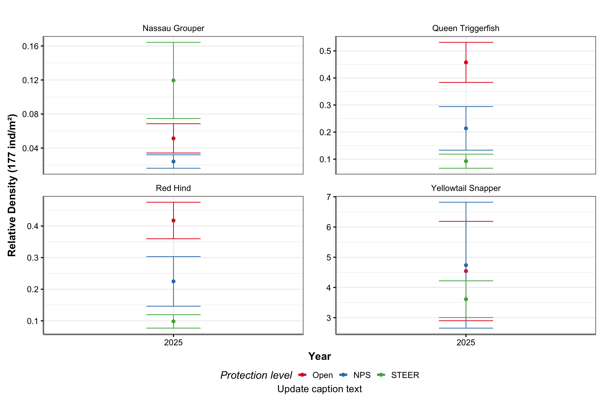
2.4 Occurrence
Monitoring species occurrence, or how often a species is detected in surveys, offers valuable insight into its distribution. This metric provides presence data regardless of abundance, which helps to identify whether a species is widespread or rare. For resource managers, species occurrence can be used as a bioindicator of overall ecosystem health and to evaluate the success of restoration projects. A consistently higher occurrence of a fish species, especially of a rare species or an obligate coral dweller, within coral restoration areas serves as an indicator of high-quality habitat.
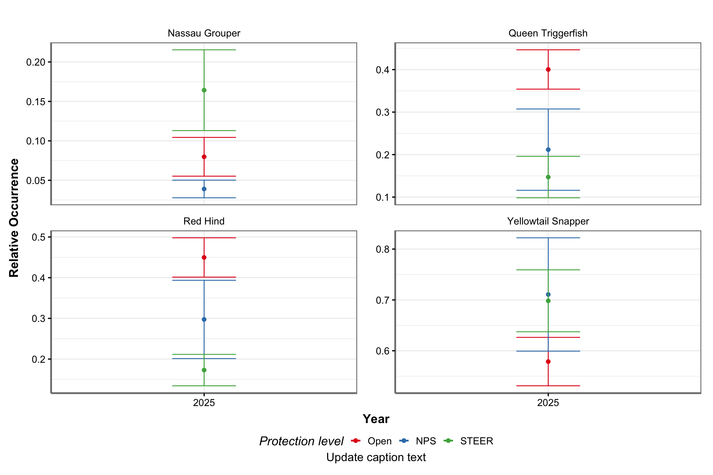
2.5 Length Frequency
Length compositions provide a detailed description of a fish’s population structure. These highly informative figures can show the length at which a species recruits to the coral reef from their nursery habitat, the length classes that are selected by local recreational and commercial fisheries, and the effectiveness of fisheries management regulations. Successful marine spatial protection can yield greater densities and larger sizes of fishery target species.
Relative length frequency by fork length (cm) bin is shown for each species within each sampling domain (i.e., STEER, NPS, and open) and between each sampling domain by survey year.
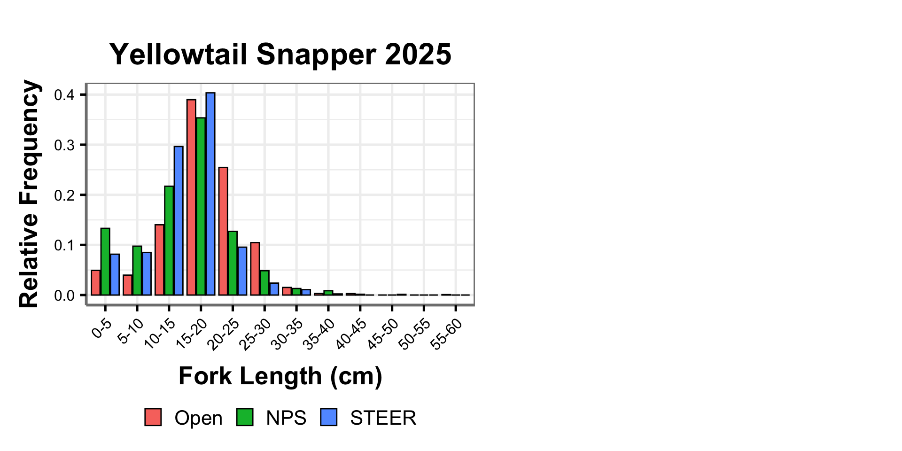
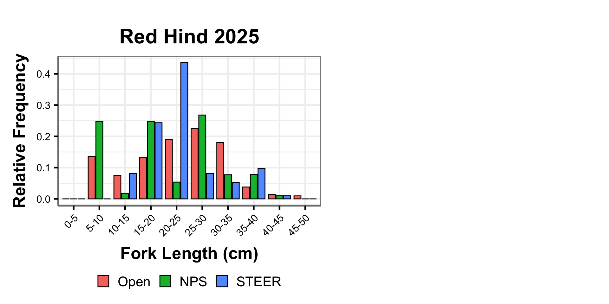
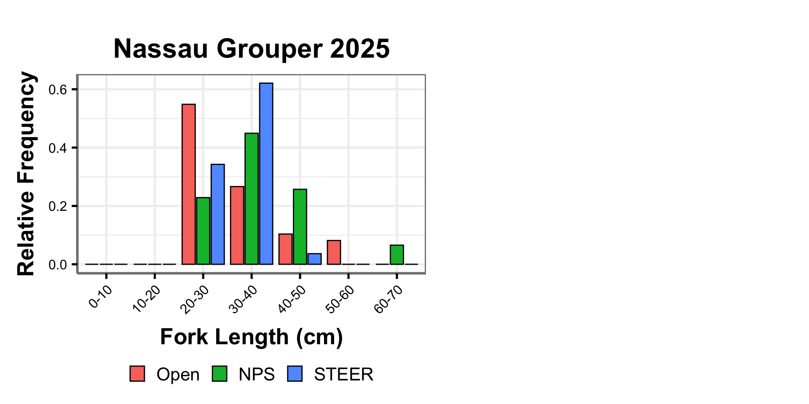
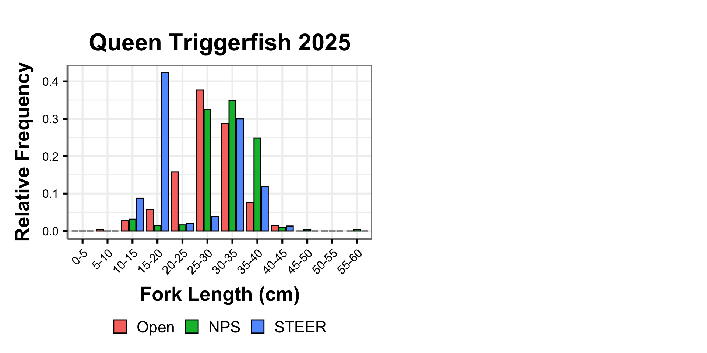
3 St. Croix
3.1 EEMP
UM took away my arc license again… waiting for Jesus to give me laptop on Monday
3.2 Strata
To allow for direct comparisons of fish communities inside and outside of marine protected areas on St. Croix, the broader NCRMP dataset, was restricted to strata types that are found within EEMP. The dataset used in this analysis contains shallow aggregated, patch, and pavement reef. To achieve an adequate number of samples in each level of protection, certain strata were combined (i.e. scattered coral and rock + pavement, bedrock + aggregated reef).
Data collected by the diver pair were averaged at the site level. Standard fish metrics, including relative density, occurrence, and length composition, were evaluated for a suite of selected individual fish species. Computational formulas of standard metrics for a single-stage stratified random sampling design are modified from (Smith et al., 2011) and provided in detail in (Grove et al., 2021) and (Bryan et al., 2016). Fish analysis scripts are open source and available through the NCRMP Fish R package (Ganz & Blondeau, 2015).
3.3 Species
3.4 Density
Relative density is an index or relative measure of population density that is commonly used in fisheries surveys. Relative density is a comparative measure of density across locations or years, rather than an absolute count that is impractical due to the scale and complexity of the marine environment. Densities shown here represent NCRMP’s fish survey area (177m2).
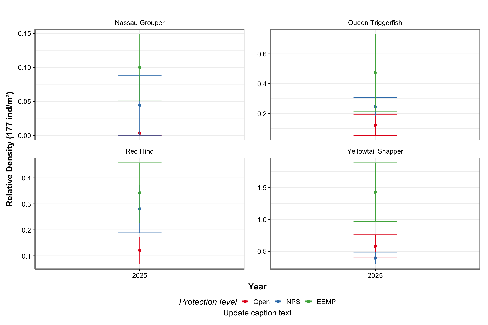
3.5 Occurrence
Monitoring species occurrence, or how often a species is detected in surveys, offers valuable insight into its distribution. This metric provides presence data regardless of abundance, which helps to identify whether a species is widespread or rare. For resource managers, species occurrence can be used as a bioindicator of overall ecosystem health and to evaluate the success of no-take marine protected areas. A consistently higher occurrence of a fish species, especially of a rare species, within a no-take MPA can serve as an indicator of management success.
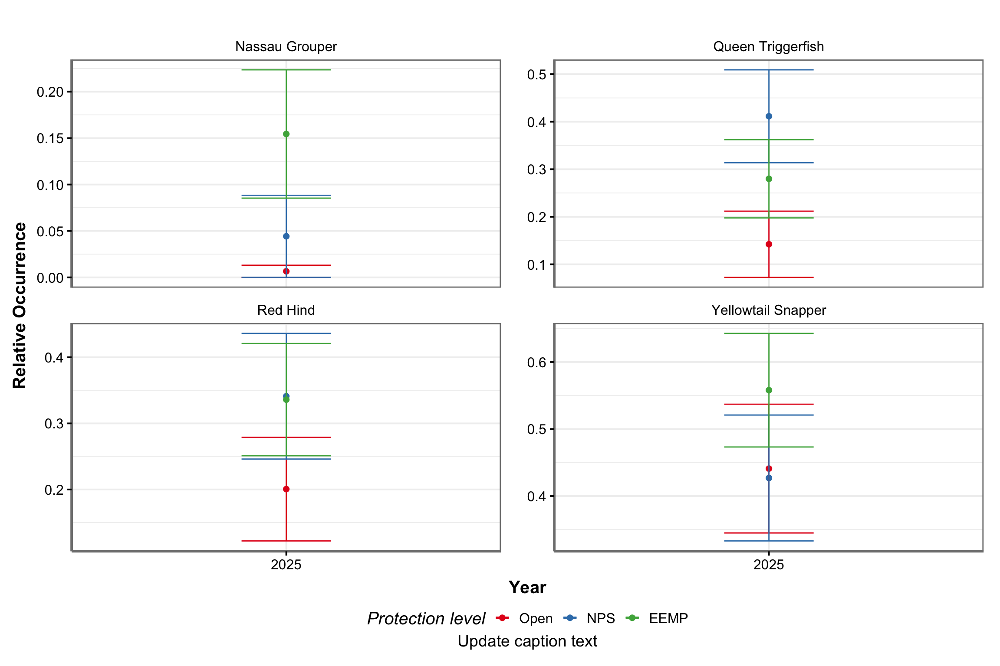
3.6 Length Frequency
Length compositions provide a detailed description of a fish’s population structure. These highly informative figures can show the length at which a species recruits to the coral reef from their nursery habitat, the length classes that are selected by local recreational and commercial fisheries, and the effectiveness of fisheries management regulations. Successful marine spatial protection can yield greater densities and larger sizes of fishery target species.
Relative length frequency by fork length (cm) bin is shown for each species within each sampling domain (i.e., EEMP, NPS, and open) and between each sampling domain by survey year.
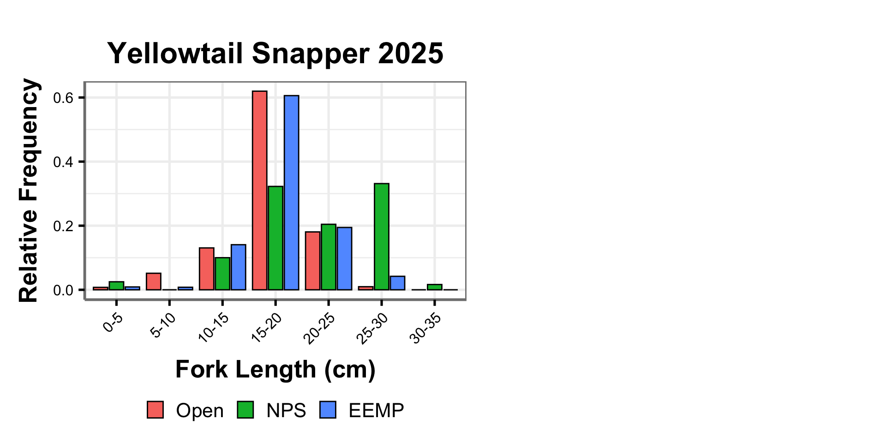
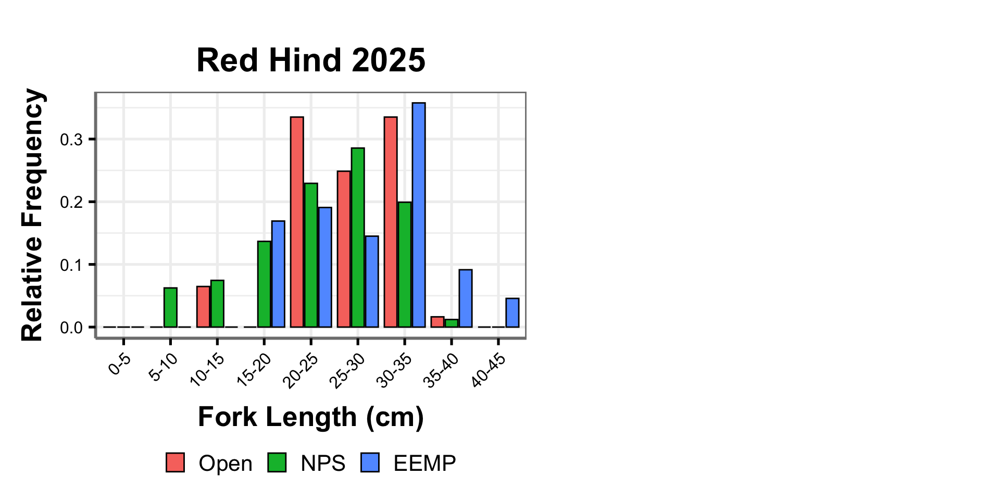
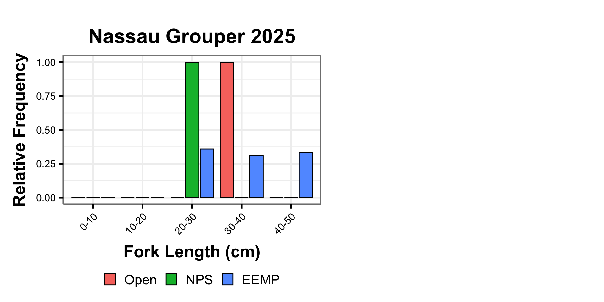
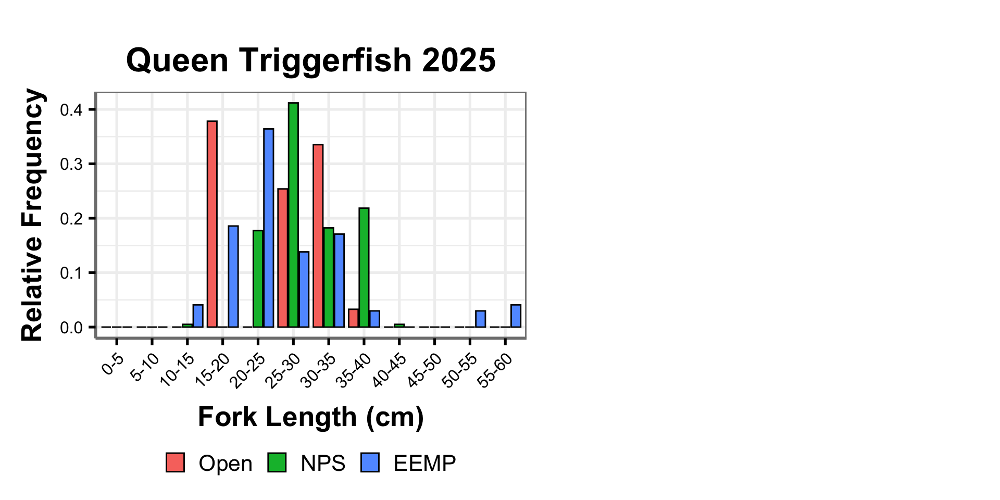
References
Ault, S. J., Smith, G. S., Luo, J., Grove, J. L., Johnson, W. M., & Blondeau, J. (2021). Refinement of the southern florida reef tract benthic habitat map with habitat use patterns of reef fish species [Dataset]. NOAA National Centers for Environmental Information. https://www.ncei.noaa.gov/archive/accession/0224176
Bryan, D. R., Smith, S. G., Ault, J. S., Feeley, M. W., & Menza, C. W. (2016). Feasibility of a regionwide probability survey for coral reef fish in puerto rico and the u.s. Virgin islands. Marine and Coastal Fisheries, 8(1), 135–146. https://doi.org/10.1080/19425120.2015.1082520
CRCP, N. (2024). National coral reef monitoring program (NCRMP) reef visual census (RVC) fish survey protocols u.s. Atlantic: Florida, flower garden banks, puerto rico, and u.s. Virgin islands (p. 22). NOAA Coral Reef Conservation Program. https://doi.org/10.25923/1y7h-cf65
Ganz, H., & Blondeau, J. (2015). Reef visual census statistical package in r. R package. https://github.com/jeremiaheb/rvc
Grove, L. J. W., Blondeau, J., & Ault, J. S. (2021). National coral reef monitoring program’s reef fish visual census metadata for the u.s. caribbean. NOAA Southeast Fisheries Science Center. https://doi.org/10.25923/39r6-9578
Smith, S. G., Ault, J. S., Bohnsack, J. A., Harper, D. E., Luo, J., & McClellan, D. B. (2011). Multispecies survey design for assessing reef‐fish stocks, spatially explicit management performance, and ecosystem condition. Fisheries Research, 109(1), 25–41. https://doi.org/10.1016/j.fishres.2011.01.012